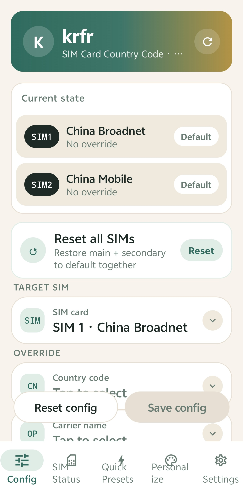

📶 krfr
SIM Card MCC/MNC & Carrier Configuration Tool · No Root · Powered by Shizuku


📥 Download
Latest version v1.0.9 · Android 8+ · No Root
✨ Features
| 🌍 | MCC/MNC Override — Change SIM card country code (MCC/MNC) and carrier name via Shizuku, per-SIM independent override with custom values. |
|---|---|
| 📡 | Live SIM Status — Network type, signal strength, MCC/MNC, country/region, roaming state, masked ICCID for every SIM in real time. |
| ⚡ | Quick Presets — 18 common "country code + carrier" combos, apply to any SIM with one tap. |
| 💾 | Backup & Restore — Export all override configs as JSON; restore after switching devices or reinstalling. |
| 🎨 | Personalize — 4 color themes (dark green / ocean blue / warm orange / rose), light & dark modes, upload your own background image. |
| 🪪 | SIM Display Name — Edit each SIM's display name (status bar card name) with one-tap restore to default. |
| 🌐 | Trilingual UI — English / 简体中文 / 繁體中文 — all interface texts localized; auto-matches system language on first launch. |
| 🔄 | Update Check — Built-in update checker backed by a fast domestic server (GitHub API as fallback). |
📱 Screenshots

Config screen · per-SIM independent country code & carrier override (SIM1 China Broadnet / SIM2 China Mobile)
🚀 Quick Start
- Install and activate Shizuku (via wireless debugging or ADB).
- Download and install the krfr APK (allow "install unknown apps").
- Open krfr, pick your language (auto-matched to system, English default), then follow the wizard to grant Shizuku permission.
- Select a SIM → change MCC/MNC or carrier name → save.
- Reboot the device or wait for the config to take effect.
🛠 Build from Source
Requirements: Android Studio (Koala or newer) · JDK 17 (Gradle 8.9 does not support JDK 25) · Android SDK
cd krfr export JAVA_HOME=$HOME/jdk17/Contents/Home ./gradlew :app:assembleRelease
APK output: app/build/outputs/apk/release/app-release.apk
If
ANDROID_SDK_ROOT points to a wrong path, run unset ANDROID_SDK_ROOT first to avoid conflicts with ANDROID_HOME.📁 Project Structure
app/src/main/java/com/github/krfr/
├── data/ # Preset data: country codes, carriers, quick presets, settings persistence
├── manager/ # Core logic: CarrierConfig override, SIM status, backup/restore, update check
├── ui/
│ ├── components/ # Shared components (gradient headers, status badges, result banners…)
│ ├── screens/ # Config / SIM status / Quick presets / Settings / About / Personalize
│ ├── theme/ # Theme palettes & switching
│ └── MainScaffold.kt # Bottom navigation container
└── MainActivity.kt
🧩 Tech Stack
- Kotlin + Jetpack Compose (Material 3)
- Shizuku (rikka.shizuku:api:13.1.5) + HiddenApiBypass, fully rootless
- Package
com.github.krfr· Latest version v1.0.9 - minSdk 26 / targetSdk 35 / compileSdk 36
📄 License
This project is developed based on Ackites/Nrfr under the Apache-2.0 license. Upstream license: Ackites/Nrfr LICENSE
⚠️ Disclaimer
This tool is for learning and research purposes only. Modifying carrier configuration may affect network, roaming and region detection. Use at your own risk.